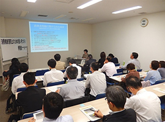

消費者行政充実埼玉会議

10月5日(月)14時より、浦和コミュニティセンター第10集会室にて、講師にNPO法人新潟県消費者協会会長 長谷川かよ子さんを迎え、消費者被害防止の担い手づくり学習会を開催し、行政・弁護士・司法書士・消費生活コンサルタント・生協関係者等26人が参加しました。
□概要
振り込め詐欺や意に沿わない契約など、高齢者や若者を狙った消費者被害の防止やその解決のために、先進的な活動で注目を集めるNPO法人新潟県消費者協会の消費者被害防止のための担い手養成とその実践事例を学びました。
○開会挨拶(池本誠司弁護士)
埼玉県では消費者被害防止サポーターが地域であまり活用されていない現状があり、養成やフォローアップ、市町村との連携が新潟では以前からしっかりとした現状があり、ぜひお聞きしたいと思います。
○講演概要
長谷川会長より、全国と新潟県の消費者被害の実態および新潟県消費者協会の活動内容が紹介され、6日間の消費生活養成サポーター講座の内容や消費生活サポーターの役割と活動の詳細が報告されました。
○意見交換
新潟県消費者協会会員と登録サポーターの関係や、団体賛助会員の内訳、行政や警察との協力づくり、委託費や交通費の支払い、サポーターの活動実態など、多方面からの質問が寄せられ、活発な討議となりました。
○閉会挨拶(岩岡県生協連会長理事)
養成とフォローアップ講座や活躍の場づくりが大切なポイントです。消費者市民社会づくりを一緒にすすめていきましょう。
☆ アンケート結果から☆
- 各団体との連携、費用、活動方法など具体的な運営を知ることができ、大変参考になりました。
- 新潟では県が窓口になり、しっかりネットワークができていることでサポーターが活躍できていると思いました。資料の本も具体例があり、大変参考になりました。
- 市町村の協会との関係やグループの動きを育てる配慮も参考になりました。